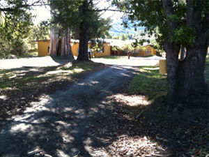
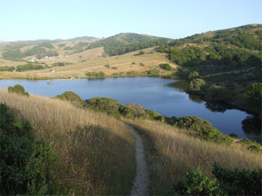

NodeConf SummerCamp 2011 at Walker Creek Ranch, California
NodeConf SummerCamp Info:
NodeConf SummerCamp is an unconference held at Walker Creek Ranch. Developers of all skill levels are invited to discuss, learn, and build a stronger community. The only requirement is a healthy enthusiasm for non-blocking server side JavaScript and maybe an abnormal obsession with Ryan Dahl.
The day will be filled with concurrent unconf style discussions and a few short formal talks. The nights will be full of games, beers around the campfire, and music in the barn. Mornings will start breakfast, coffee and mimosas.
Those that purchase from the initial lot of tickets are free to bring their family at no additional cost. Because of differences in rooms between the two ticket lots the second lot of tickets sold will be for rooms that don't easily accommodate couples and children so if you want to bring your family make sure you get in on the first lot sold.

- 
- 
Food
Walker Creek Ranch provides 3 meals a day. The food is purchased from the local farmers market or grown on site at the ranch and prepared fresh everyday. Vegetarian and Vegan options will be available.
Accomodations
The first lot of tickets are all for "Semi-Private" rooms. There are 104 twin beds spread across a half dozen lodges with 2-5 beds per room. The second lot of ticket accommodations have yet to be determined but will not easily accommodate significant others and/or children.
Travel
On September 5th we will be running buses from San Francisco up to the ranch from 1pm - 5pm. Arrange your travel so that you can make one of the buses or arrange to drive up to the ranch yourself.